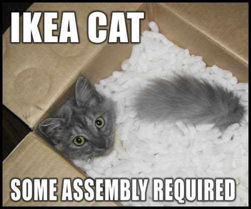

Prov : JS
Starting a Project with ExtJS 4
- Basic Requirements
- Directory Structure
- Compass Setup
- Deployment
Some Basic Requirements
Some Basic Requirements
-
A decent JavaScript debugger
- Google Chrome
- Mozilla Firefox with the Firebug plugin
- Web Server
- XHR over local file:// protocol is cross origin restricted
- Try Apache
- The Ext JS 4 SDK
- Get the Ext JS 4 SDK and unzip it to your webroot
- http://localhost/extjs/index.html should open the Ext Welcome page.
Directory Structure
A bad setup can lead to problems
Directory Structure
Recommended directory structure for your project:
- MyApp
- app
- cmp - custom base components
- controller
- model
- store
- view
- utils ...and other directories as needed
- extjs
- resources
- css
- images
- sass - "compass watch" here
- app.js - add to index.html
- index.html - single page app
Inside MyApp/app
- /app
- /cmp
- /controller
- /model
- /store
- /view
- Login.js
- Viewport.js
- /candidate
- /company
- TabPanel.js
- /search
- /detail
- History.js
- KeyData.js
- Panel.js - classname = MyApp.view.company.detail.Panel
Dynamic Loader
- Ext JS 4 comes with a system for dynamically loading only
the JavaScript resources necessary to run your app. - When you instantiate a class, Ext JS checks to see if your
classname has already been defined. If it hasn't, the
loader will attempt to load the JavaScript file that cooresponds
to your classname. - For a classname of MyApp.view.company.detail.Panel,
the loader will look for a file called Panel.js
in the /app/view/company/detail directory.
Inside the Panel.js Class
Ext classes have a powerful set of pre-processors which takes care of everything related to class creation, including inheritance, mixins, configuration and statics
Ext.define('MyApp.view.company.detail.Panel', {
extend: 'Ext.panel.Panel',
xtype: 'companydetail',
requires: [ 'MyApp.model.Company' ],
layout: {
type: 'hbox'
},
initComponent: function() {
this.items = [ ]; //TODO - add items
this.callParent();
}
}); -
Use Ext.Define to create your class
- 'className'
- configuration object
- Use the extend property for inheritance
-
Add the initComponent() method
- constructor logic for subclasses
of Ext.Component - don't forget to call this.callParent()
- constructor logic for subclasses
- Add any extra properties
- Add items / content
Hello World Test
Checking if everything is all right...
Hello World Test
index.html<!DOCTYPE html>
<html>
<head>
<title>Hello Prov:JS</title>
<link rel="stylesheet" type="text/css" href="extjs/resources/css/ext-all.css">
<!-- for development use ext-debug.js -->
<script type="text/javascript" src="extjs/ext-debug.js">
<script type="text/javascript" src="app.js">
</head>
<body></body>
</html>Hello World Test
app.jsExt.Loader.setConfig({
enabled: true
});
Ext.application({
name: 'MyApp',
autoCreateViewport: true,
launch: function() {
Ext.Msg.alert('Lauched!','Our first app.');
}
});Hello World Test
viewport.jsExt.define('MyApp.view.Viewport', {
extend: 'Ext.container.Viewport',
layout: 'fit',
items: [
{
title: 'Providence JavaScript',
html: 'Hello Prov:JS'
}
]
});Hello World Test

Compass Setup
Adding some style
Compass Setup
A Quick Intro
-
Sass is an extension of CSS3. It adds nested rules, variables,
mixins, selector inheritance and more.
-
Compass extends SASS by providing CSS3 mixins and the ability to
compile a whole directory tree of SASS files into one CSS file.
Compass Setup
A SASS stylesheet - app.scss
@charset "UTF-8";
$base-color: #167cce;
$font-family: "proxima-nova", sans-serif;
$gradient-blue: linear-gradient(#0d60a3, #074e89);
$dft-padding: 5;
@import 'compass';
@import 'ext4/default/all';
.x-window-body {
background: #fff;
}
.x-panel-header {
@include background-image($gradient-blue);
padding: $dft-padding * 2px;
} directory contains all of the defined variables for each component in Ext JS ($base-color).
Compass Setup
.x-panel-header {
@include background-image($gradient-blue);
padding: $dft-padding * 2px;
}/* line 28, ../sass/app.scss */
.x-panel-header {
background-image: -webkit-gradient(linear, 50% 0%, 50% 100%, color-stop(0%, #0d60a3), color-stop(100%, #074e89));
background-image: -webkit-linear-gradient(#0d60a3, #074e89);
background-image: -moz-linear-gradient(#0d60a3, #074e89);
background-image: -o-linear-gradient(#0d60a3, #074e89);
background-image: -ms-linear-gradient(#0d60a3, #074e89);
background-image: linear-gradient(#0d60a3, #074e89);
padding: 10px; }
Compass Setup
Before
Compass Setup
After

Compass Setup
Installlation
-
RUBY
- Mac OSX - Install XCode from the Apple Developer site
- Windows - Download the latest Ruby Installer from rubyinstaller.org
-
Compass Gem
- Mac OSX - From the Terminal.app: sudo gem install compass
-
Windows - Click on Command Prompt with Ruby from the Start Menu
Ruby commands may work from a regular command line depending on your install
From the command window: gem install compass
Compass Setup
Directory Structure
- MyApp
- app
- extjs
- resources
- css
- images
-
sass
- app.scss
-
config.rb
# $ext_path is the path to where Ext JS is installed # this path should be relative to the config.rb file $ext_path = "../../extjs"
Compass Setup
Compiling
- Change into your /myapp/resources/sass directory
- Type: compass compile
- or type: compass watch
- Compass will compile your .scss file into the /myapp/resources/css directory
-
In your index.html file, replace
with your new<link rel="stylesheet" type="text/css" href="extjs/resources/css/ext-all.css" /><link rel="stylesheet" type="text/css" href="resources/css/app.css" />
Compass Setup
More Info
- Sass - sass-lang.com
- Compass - compass-style.org
- Ext JS variables - the Myapp/Extjs/Resources/Themes/Stylesheets/Ext4/Default/Variables
directory contains all of the defined variables for each component in Ext JS.
Deployment
Big Payload. Fast Response.

Deployment
The SDK tools are a completely optional but easy way to create a minified "production-ready" build of all of your JavaScript files. JSBuider is the one we will use.
- Download the Sench SDK tools - sencha.com/products/sdk-tools/
- CD into your "MyApp" directory
-
Create a JSBuilder (jsb3) manifest file.
orsencha create jsb -a index.html -p myapp.jsb3sencha create jsb -a http://localhost/index.cfm -p myapp.jsb3- -a : The HTML page to create the build from. This can be a file name or a URL.
- -p : The name of the manifest file to build.
- -v : Verbose output to your command window.
The contents of myapp.jsb3
{
"projectName": "Project Name",
"licenseText": "Copyright(c) 2012 Company Name",
"builds": [{
"name": "All Classes",
"target": "all-classes.js",
"options": {
"debug": true
},
"files": []
},{
"name": "Application - Production",
"target": "app-all.js",
"compress": true,
"files": [{
"path": "",
"name": "all-classes.js"
},{
"path": "",
"name": "app.js"
}]
}
],
"resources": []
}-
Run JSBuilder to combine and minify the files
sencha build -p myapp.jsb3 -d .- -p : The name of the manifest file to use
- -d : The location to put the new combined files. "." = this directory !
- -v : Verbose output to your command window
-
This creates 2 files:
- all-classes.js : Not minified - easier for debugging
-
app-all.js : Minified file that contains all of your application code and all
of the Ext JS classes it needs to run.
-
In your index.html, replace
-
with<script type="text/javascript" src="extjs/ext-debug.js"> <script type="text/javascript" src="app.js"> -
<script type="text/javascript" src="extjs/ext.js"> <script type="text/javascript" src="app-all.js">
-
Starting a Project with ExtJS 4
- Install a local web server
- Follow the recommended directory structure
- Take advantage of Compass
- Use the deployment tools
Timothy Eagan - Twitter: @TimothyEagan
Modus Create - moduscreate.com
Prov:JS - meetup.com/prov-js
Slides - github.com/sulfurious/ProvJS1208